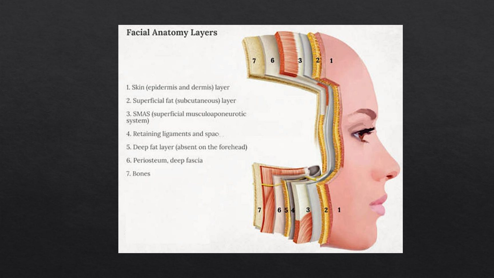
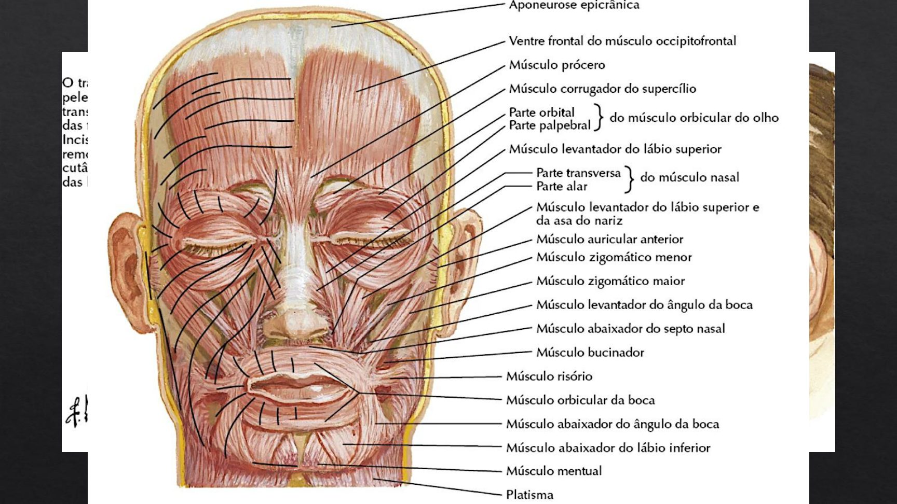
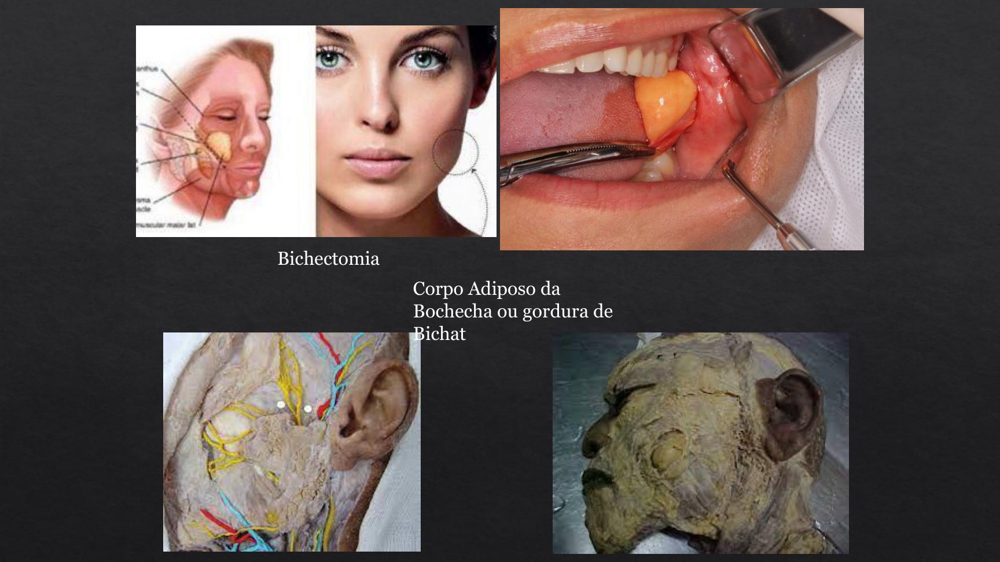
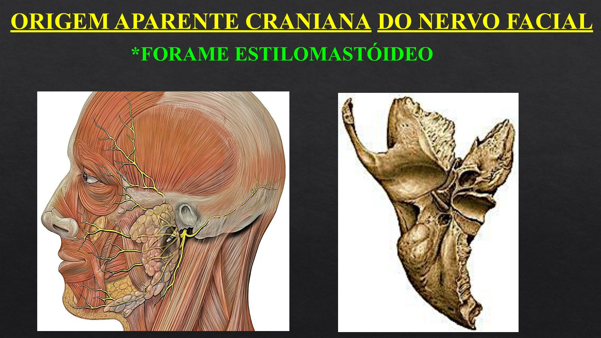
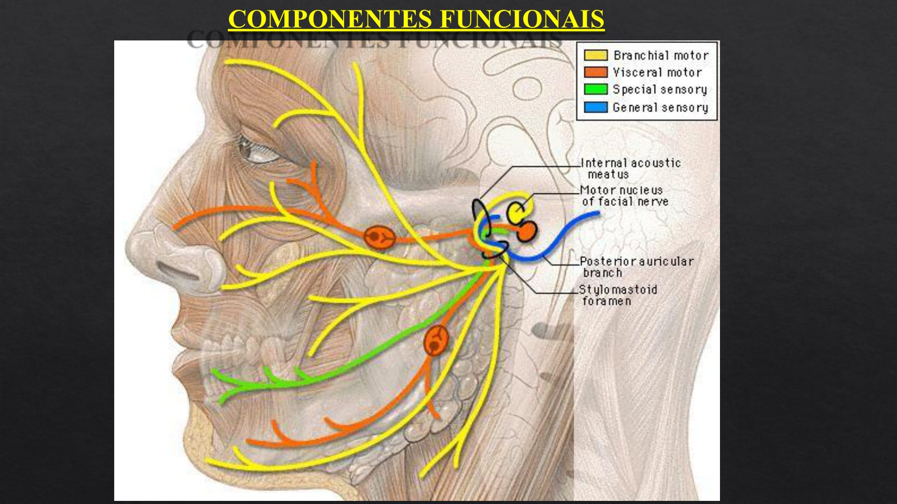
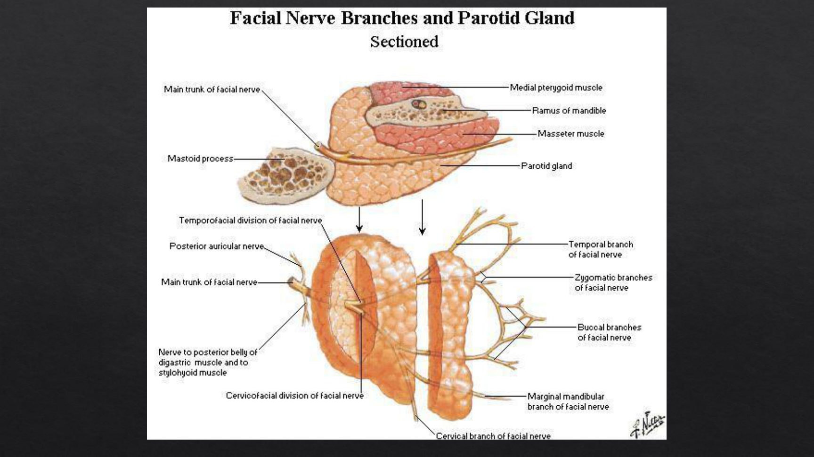
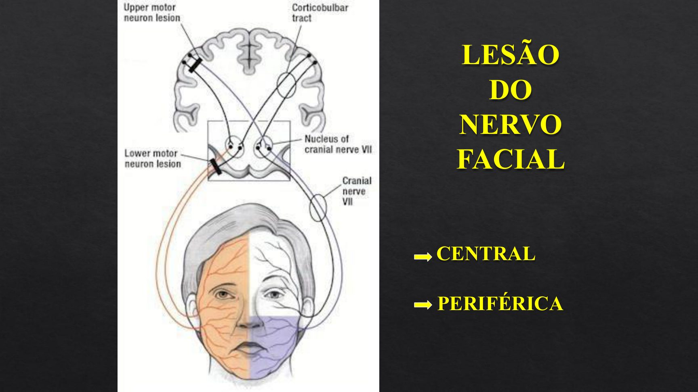
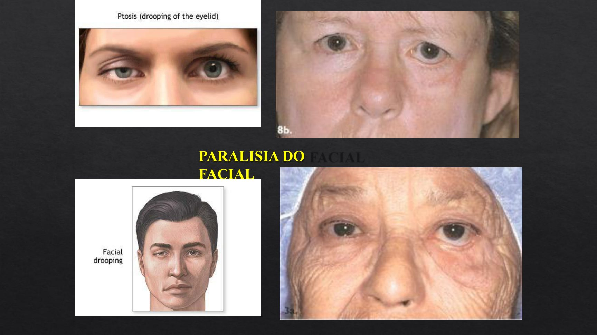
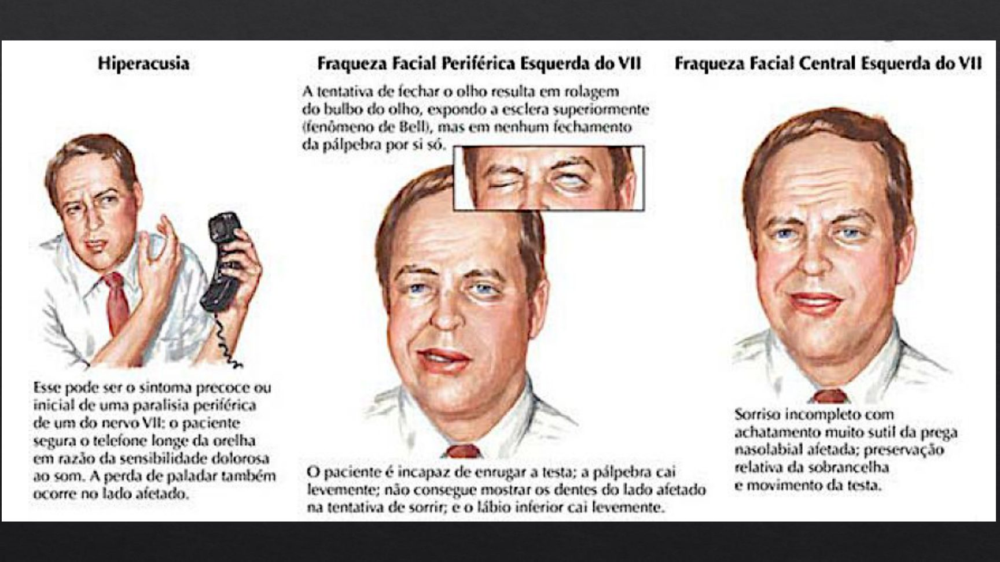
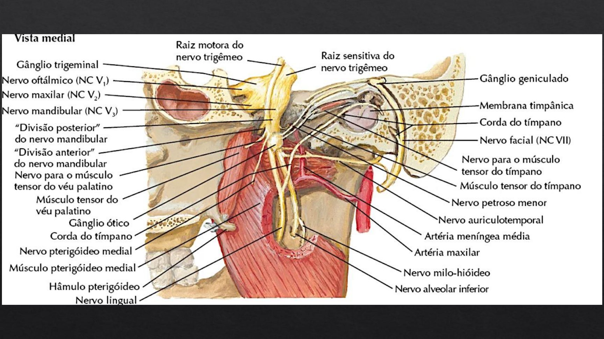

Córtex Estudos · 4º Semestre · Anatomia Topográfica · Aula de 11/09
Face: SMAS, Nervo Facial e Trigêmeo
As camadas da face e o sistema que a cirurgia plástica traciona, os músculos da mímica e sua origem branquial, o corpo adiposo de Bichat — e os dois nervos da prova: o facial, do sulco bulbopontino à paralisia de Bell e às lesões ramo a ramo; e o trigêmeo, o sensitivo da cabeça, com seus forames, seus pontos de bloqueio e a neuralgia que "é tudo trigêmeo".
1 · As camadas da face e o SMAS
- Na face, as camadas mudam em relação ao resto do corpo: 1) pele · 2) tela subcutânea (sem a camada lamelar do abdome) · 3) o SMAS · 4) espaço com os ligamentos de retenção · 5) fáscia profunda · 6) periósteo.
- 🎯 SMAS = Sistema Músculo-Aponeurótico Superficial: a aponeurose que ANCORA os músculos da expressão facial — por isso nenhuma mímica é totalmente isolada ("você não consegue sorrir só de um lado sem mexer o outro").
- 🎯 Descrito por um cirurgião plástico (~1950), revolucionou a cirurgia plástica: antes se "puxava a pele e cortava"; hoje se traciona o SMAS. As "harmonizações faciais" atuais também mexem exatamente nesse plano — cheio de vasos.
- Dá para separar o SMAS na peça: levanta-se a pele, e uma segunda incisão levanta o SMAS (trabalho do grupo do professor com alunos de iniciação científica).

2 · Linhas de força: por onde cortar
- 🎯 As linhas de tensão da pele são PERPENDICULARES às fibras musculares: o frontal tem fibras longitudinais → as rugas (e as linhas de incisão) são transversais.
- Regra cirúrgica geral: respeitar as linhas — a incisão paralela à linha de tensão cicatriza melhor e lesa menos (vale para a face como para o abdome).
3 · Mímica e mastigação: a origem branquial
- 🎯 A musculatura da cabeça é BRANQUIAL (por isso os americanos separam do "somático"): 1º ARCO branquial → músculos da MASTIGAÇÃO → nervo TRIGÊMEO · 2º ARCO → músculos da MÍMICA → nervo FACIAL (3º arco → glossofaríngeo).
- 🎯 Exceções — os músculos da cabeça que são SOMÍTICOS (não branquiais): a LÍNGUA e os músculos DO OLHO (vêm dos somitos, lá do neuróporo rostral).
- O epicrânio (occipitofrontal) e a lista completa da mímica ficam no roteiro — revisar para a prática (inclusive os auriculares e o ramo cervical descendo para o PLATISMA).

4 · O corpo adiposo de Bichat (e a bichectomia)
- Sobre o BUCINADOR mora o CORPO ADIPOSO DA BOCHECHA (o antigo "corpo adiposo de Bichat") — volume que varia de pessoa a pessoa (de "bochechudo" à fóvea).
- 🎯 A BICHECTOMIA retira essa gordura por dentro da boca — o coxim é livre e destacável. (Curiosidade da peça: a parótida ACESSÓRIA, variação que avança sobre o bucinador junto ao ducto.)

5 · Nervo facial: origem e trajeto intraósseo
- VII par, MISTO — origem aparente no SULCO BULBOPONTINO (lateral ao VI, medial ao VIII), acompanhado do nervo INTERMÉDIO.
- Trajeto: meato acústico interno → canal do facial no temporal → JOELHO com o GÂNGLIO GENICULADO → sai do crânio pelo 🎯 FORAME ESTILOMASTÓIDEO (origem aparente craniana).
- Colaterais INTRAÓSSEOS (a porção sensitiva/autônoma): PETROSO MAIOR → gânglio pterigopalatino → glândula LACRIMAL · nervo do ESTAPÉDIO (amortece o som) · CORDA DO TÍMPANO → 🎯 pega carona no LINGUAL (trigêmeo) → gustação dos 2/3 ANTERIORES da língua + parassimpático das glândulas SUBLINGUAL e SUBMANDIBULAR.
- Os ramos extraósseos logo após o forame: auricular posterior, ramo digástrico (ventre posterior) e estilo-hióideo — e daí o tronco entra na parótida.


6 · Os ramos do facial: do estilomastóideo à parótida
- Dentro da PARÓTIDA, o tronco divide-se nos troncos temporofacial e cervicofacial → 🎯 os CINCO ramos terminais: TEMPORAL · ZIGOMÁTICO · BUCAL · MARGINAL DA MANDÍBULA · CERVICAL (o leque clássico sobre a face).
- A parótida não é inervada pelo facial — ele só a atravessa; a secreção parotídea é do GLOSSOFARÍNGEO (que também pega carona no trigêmeo, via aurículo-temporal — tópico 13).

7 · Paralisia central × periférica
- 🎯 CENTRAL (AVC): POUPA O QUADRANTE SUPERIOR — o paciente enruga a testa e fecha os olhos, mas a boca desvia. Por quê? O núcleo do facial que cuida da testa recebe fibras dos dois hemisférios.
- PERIFÉRICA: a HEMIFACE INTEIRA paralisa — testa lisa, olho que não fecha, boca caída.
- 🎯 O gesto clínico da aula: viu paralisia? Peça para enrugar a testa e fechar os olhos. Conseguiu = CENTRAL = AVC = corra (isquêmico precisa de conduta imediata; hemorrágico ameaça a vida). Não conseguiu = periférica — feia, mas de outro prognóstico.

8 · Paralisia de Bell: o quadro completo
- Paralisia facial periférica AGUDA SEM CAUSA DETECTÁVEL — descrita por Sir Charles Bell (1821), que sofreu e desenhou o próprio quadro. Associações: VIROSES (herpes em especial) com edema do nervo no canal — uma neuropraxia; há relatos com choque térmico.
- 🎯 O quadro típico: "acordou de manhã com paralisia" — instalação rápida; sulcos da testa e nasolabial APAGADOS, comissura caída, rima palpebral AUMENTADA (olho que não fecha), boca e língua desviando para o lado sadio, dificuldade de falar/assobiar, LACRIMEJAMENTO CONSTANTE (a pálpebra não espalha o filme) e salivação escorrendo.
- 🎯 SINAL DE BELL: o globo ocular SOBE na tentativa de fechar a pálpebra — a lubrificação tenta se completar sem o orbicular.
- Dor retroauricular intensa ("a orelha dói demais"): o facial inerva a região do pavilhão/mastoide — analgesia entra no tratamento.

9 · Bell: números, lágrimas de crocodilo e tratamento
- 🎯 Os números da aula: dor retroauricular ~50% · ↓ sensibilidade gustativa ~30% · ↓ produção lacrimal ~5% · hiperacusia (som alto/eco — perdeu o ESTAPÉDIO) · e o teste positivo em ~70%:
- 🎯 SÍNDROME DAS LÁGRIMAS DE CROCODILO: pinga-se ácido acético (vinagre) na língua — o estímulo SALIVATÓRIO faz LACRIMEJAR (as fibras autonômicas regeneram/cruzam trocadas). Positivo em ~70% dos pacientes com paralisia.
- Tratamento escalonado: 1) anti-inflamatório (corticoide — desinchar o nervo no canal) → 2) falhou em ~15 dias? DESCOMPRESSÃO CIRÚRGICA: abre-se a mastoide e alarga-se o canal com broca, liberando o nervo → 3) nervo destruído? ENXERTO (sural, cutâneos). Prognóstico geral de Bell: bom.

10 · Lesões ramo a ramo do facial
| Ramo lesado | O que o paciente perde |
|---|---|
| TEMPORAL | enrugar a testa e corrugar o supercílio (frontal/corrugador) |
| ZIGOMÁTICO | fechar o olho (orbicular do olho) |
| BUCAL | sorrir, ASSOPRAR, SUGAR (bucinador!) — com distúrbios de mastigação/deglutição (o bolo cai no vestíbulo) |
| MARGINAL DA MANDÍBULA | abaixar o lábio inferior (abaixadores) |
| CERVICAL | esticar o PLATISMA |
⚠️ MARGINAL da mandíbula ≠ MANDIBULAR — "isso vai cair na prova"
MARGINAL DA MANDÍBULA = ramo do FACIAL (motor da mímica do lábio inferior). MANDIBULAR = ramo do TRIGÊMEO (sensitivo + mastigação). Há livro que escreve errado — o professor avisou: não confundir.
11 · Trigêmeo: o sensitivo da cabeça (e a dura-máter)
- 🎯 O trigêmeo é O nervo sensitivo da cabeça — "na dúvida na prova, responda trigêmeo". As exceções de rodapé: o terço POSTERIOR da língua e a faringe (GLOSSOFARÍNGEO — por isso o reflexo do vômito: IX e X são os aferentes do centro do vômito no bulbo) e a sensibilidade do pavilhão da orelha, dividida com VII, IX e X.
- 🎯 A DURA-MÁTER é inervada pelo TRIGÊMEO → enxaqueca e cefaleias "são tudo trigêmeo" — dor que pode vir com vômito e alterações visuais (o quadro neurovegetativo).
- Neuroanatomia: maior nervo da PONTE; os núcleos sensitivos (espinal, principal, mesencefálico) são a continuação da coluna posterior da medula — ocupam o tronco quase inteiro. Parte motora = mastigação.
12 · Oftálmico, maxilar, mandibular — e seus forames
| Ramo | Forame de saída | Principais ramos da aula |
|---|---|---|
| OFTÁLMICO (V1) | 🎯 fissura orbital SUPERIOR | SUPRAORBITAL, SUPRATROCLEAR, ETMOIDAL, LACRIMAL (+ ramo meníngeo) |
| MAXILAR (V2) | 🎯 forame REDONDO | INFRAORBITAL (pálpebra inferior, nariz, lábio superior, gengiva), ALVEOLARES SUPERIORES (dentes), PALATINOS maior/menor (palato, até a fossa incisiva) — e o seio maxilar no caminho |
| MANDIBULAR (V3) | 🎯 forame OVAL | o único MISTO — tópico 13 |
- Todos os três dão ramos MENÍNGEOS — "não pode esquecer".
13 · O mandibular por dentro: mastigação, lingual e a "aliança"
- Parte MOTORA: músculos da MASTIGAÇÃO (temporal — ramos temporais profundos —, MASSETER — nervo massetérico —, pterigóideos) + MILO-HIÓIDEO e VENTRE ANTERIOR do digástrico (os abaixadores da mandíbula — "por isso ele abre a boca").
- LINGUAL: sensibilidade geral dos 2/3 ANTERIORES da língua — e recebe a 🎯 CORDA DO TÍMPANO (facial): gustação dos 2/3 + parassimpático sublingual/submandibular. "A aliança facial-trigêmeo — essa não pode faltar nunca."
- ALVEOLAR INFERIOR: entra na mandíbula (dentes inferiores) e sai no forame mentual como nervo MENTUAL (mento e lábio inferior). É "o quinto nervo mais pedido" na peça.
- AURÍCULO-TEMPORAL: sensitivo do pavilhão/têmpora — e leva de carona as fibras do GLOSSOFARÍNGEO para a PARÓTIDA. 🎯 Os três "auriculares" da sensibilidade do pavilhão: auricular MAGNO (plexo cervical), auricular POSTERIOR (facial) e AURÍCULO-TEMPORAL (trigêmeo).

14 · Os três pontos de bloqueio da face
- 🎯 Para anestesiar a face num corte grande, basta conhecer as três saídas — alinhadas verticalmente (na linha da pupila): SUPRAORBITAL (V1, no forame/incisura supraorbital) · INFRAORBITAL (V2, no forame infraorbital) · MENTUAL (V3, no forame mentual).
- "Se souber onde sai o tronco sensitivo, faz o bloqueio e mexe à vontade" — sutura de face com três agulhadas.
15 · Neuralgia do trigêmeo
- Dor lancinante nos territórios de V, disparada por PONTOS DE GATILHO (tocar a face, mastigar, escovar).
- 🎯 É uma neuropatia CENTRAL (dos núcleos sensitivos — a continuação da coluna posterior): por isso não adianta "trocar" o nervo com enxerto — bloqueia-se a dor perifericamente e ela volta por outro raminho.
- Tratamento: medicação (e infiltração dos pontos de gatilho alivia mas não cura) → procedimentos no GÂNGLIO trigeminal: COMPRESSÃO POR BALÃO (percutânea, a preferida hoje), radiofrequência/radiocirurgia, até a GANGLIOTOMIA (tira toda a sensibilidade da cabeça, mas tira a dor). Antigamente: álcool (dissolve a mielina) — o mesmo princípio da alcoolização dos intercostais no câncer torácico.
16 · Resumo rápido
- Camadas da face: pele → subcutâneo → SMAS (ancora a mímica; a cirurgia plástica traciona ELE) → ligamentos → fáscia profunda. Incisões perpendiculares às fibras (= nas linhas de tensão).
- Origem branquial: 1º arco = mastigação/trigêmeo · 2º arco = mímica/facial · exceções somíticas: língua e músculos do olho. Bichat sobre o bucinador (bichectomia intraoral).
- Facial: sulco bulbopontino → gânglio geniculado → forame ESTILOMASTÓIDEO; intraósseos: petroso maior (lacrimal), estapédio, corda do tímpano (gustação 2/3 + sublingual/submandibular, via lingual); extraósseos: auricular posterior, digástrico, estilo-hióideo → parótida → temporal, zigomático, bucal, marginal da mandíbula, cervical.
- Paralisias: CENTRAL poupa o quadrante superior (testa/olho funcionam = AVC = corra) · PERIFÉRICA = hemiface toda. BELL: aguda sem causa (herpes/edema); dor retroauricular 50%, gustação 30%, lacrimal 5%, crocodilo 70%, hiperacusia (estapédio), sinal de Bell (globo sobe); tratamento: corticoide → descompressão com broca → enxerto.
- Lesões por ramo: temporal=testa · zigomático=fechar o olho · bucal=soprar/sugar/sorrir · marginal da mandíbula (FACIAL! ≠ mandibular do trigêmeo)=lábio inferior · cervical=platisma.
- Trigêmeo: sensitivo da cabeça (exceções: terço posterior da língua/faringe=IX; pavilhão=VII/IX/X) · dura-máter=trigêmeo → enxaquecas · V1=fissura orbital superior (supraorbital, supratroclear, etmoidal, lacrimal) · V2=forame redondo (infraorbital, alveolares superiores, palatinos) · V3=forame oval (misto: mastigação + milo-hióideo/ventre anterior; lingual + corda do tímpano = a aliança; alveolar inferior→mentual; aurículo-temporal com a carona do IX à parótida).
- Bloqueios: supraorbital · infraorbital · mentual — os três na mesma linha. Neuralgia de V: central, pontos de gatilho, balão/gangliotomia — enxerto não resolve.
🗺️ Resumão Pré-Prova — Face, Facial e Trigêmeo
Revisão da véspera · Anatomia Topográfica · Aula de 11/09 · só o que foi enfatizado
- Camadas: pele → subcutâneo → SMAS (Sistema Músculo-Aponeurótico Superficial — ANCORA a mímica) → ligamentos de retenção → fáscia profunda → periósteo.
- A cirurgia plástica moderna traciona o SMAS (não a pele) — descrição ~1950; harmonização facial mexe nesse plano (cheio de vasos).
- Incisões: perpendiculares às fibras musculares (= paralelas às linhas de tensão da pele).
- 1º arco branquial = MASTIGAÇÃO = TRIGÊMEO · 2º arco = MÍMICA = FACIAL · somíticos (exceção): LÍNGUA e músculos DO OLHO.
- Corpo adiposo de BICHAT sobre o bucinador → bichectomia por via INTRAORAL. Parótida acessória = variação.
- Origem: sulco BULBOPONTINO (com o intermédio) → canal do facial → joelho/gânglio GENICULADO → forame ESTILOMASTÓIDEO.
- Intraósseos: PETROSO MAIOR → lacrimal · ESTAPÉDIO (sem ele = hiperacusia) · CORDA DO TÍMPANO → carona no LINGUAL → gustação 2/3 anteriores + sublingual/submandibular.
- Extraósseos: auricular posterior, digástrico (ventre post.), estilo-hióideo → parótida → TEMPORAL · ZIGOMÁTICO · BUCAL · MARGINAL DA MANDÍBULA · CERVICAL.
- Parótida: o facial só ATRAVESSA — secreção é do GLOSSOFARÍNGEO (carona no aurículo-temporal).
| Ramo lesado | Perde |
|---|---|
| TEMPORAL | enrugar testa / corrugar supercílio |
| ZIGOMÁTICO | fechar o olho |
| BUCAL | soprar, sugar, sorrir (bucinador) |
| MARGINAL DA MANDÍBULA | abaixar o lábio inferior |
| CERVICAL | platisma |
- CENTRAL (AVC): POUPA o quadrante superior — enruga a testa e fecha o olho → corra (isquêmico: conduta imediata). PERIFÉRICA: hemiface INTEIRA.
- BELL (1821; ele mesmo teve): periférica AGUDA sem causa — viroses/HERPES com edema no canal (neuropraxia). "Acordou com paralisia."
- Quadro: sulcos apagados, rima aumentada, desvio p/ o lado são, SINAL DE BELL (globo sobe ao tentar fechar), lacrimejamento constante, dor retroauricular.
- Números: dor retroauricular 50% · gustação 30% · lacrimal 5% · LÁGRIMAS DE CROCODILO 70% (vinagre na língua → lacrimeja) · hiperacusia (estapédio).
- Tratamento: corticoide → descompressão cirúrgica (broca alarga o canal) → enxerto (sural). Prognóstico: bom.
- O sensitivo da cabeça ("na dúvida, trigêmeo") · exceções: terço POSTERIOR da língua/faringe = IX (aferente do centro do vômito, com o X) · pavilhão = VII/IX/X.
- DURA-MÁTER = TRIGÊMEO → enxaqueca/cefaleia "é tudo trigêmeo" · núcleos sensitivos = continuação da COLUNA POSTERIOR (ocupam o tronco) · maior nervo da PONTE.
- V1 oftálmico → FISSURA ORBITAL SUPERIOR (supraorbital, supratroclear, etmoidal, lacrimal) · V2 maxilar → forame REDONDO (infraorbital, alveolares superiores, palatinos) · V3 mandibular → forame OVAL (o único MISTO).
- V3: mastigação (temporal, MASSETER, pterigóideos) + milo-hióideo e ventre ANTERIOR do digástrico · LINGUAL + CORDA DO TÍMPANO = "a aliança facial-trigêmeo" · ALVEOLAR INFERIOR → nervo MENTUAL · AURÍCULO-TEMPORAL (+ carona do IX à parótida).
- Bloqueios em linha: SUPRAORBITAL · INFRAORBITAL · MENTUAL — anestesia a face em três pontos.
- Neuralgia de V: dor com PONTOS DE GATILHO; é CENTRAL (núcleos) → enxerto não resolve · tratamento: medicação → balão no gânglio/radiofrequência/gangliotomia (antigamente: álcool).
| Par | A diferença-chave |
|---|---|
| Marginal da mandíbula × mandibular | ramo do FACIAL (mímica do lábio) × ramo do TRIGÊMEO (misto) — "cai na prova" |
| Central × periférica | poupa o quadrante superior (AVC!) × hemiface inteira |
| Sensibilidade × gustação da língua (2/3 ant.) | geral = LINGUAL (V3) × gustativa = CORDA DO TÍMPANO (VII) — no mesmo cabo |
| Quem inerva a parótida | GLOSSOFARÍNGEO (via aurículo-temporal) — o facial só passa por dentro |
| Os 3 "auriculares" | magno (plexo cervical) × posterior (facial) × aurículo-temporal (trigêmeo) |
| Forames de V | V1 fissura orbital superior × V2 redondo × V3 oval |
| Neuralgia de V × Bell | DOR central com gatilhos (V) × PARALISIA periférica aguda (VII) |
| Hiperacusia em Bell | perdeu o ESTAPÉDIO (ramo do facial) — o som "grita" |
Banco de Questões — Face, Facial e Trigêmeo
Anatomia Topográfica · Aula de 11/09 · estilo ENADE/residência.